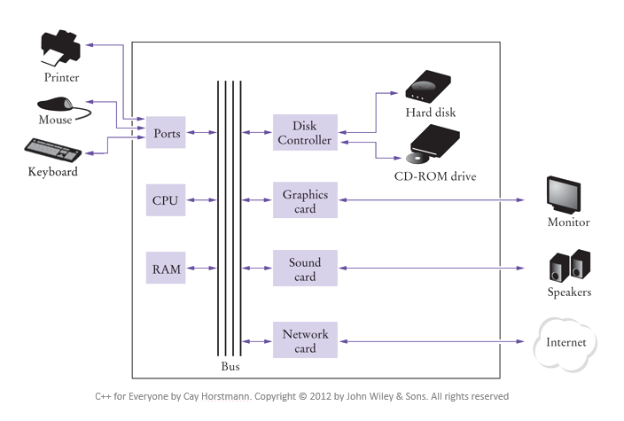

1.2 QUÈ ÉS LA INFORMÀTICA
Quan parlem de la informàtica ens referim a la ciència que s'ocupa al tractament de la informació, entesa aquesta com a una col·lecció de dades (nombres, lletres, paraules, ...).
La informació es mesura en diferents unitats: bit, Byte, KB, MB, GB, etc. Aquesta la podem representar de diferents formes, com ara, el codi ASCII(8 bits), enters (16 o 32 bit), etc.
Cal diferenciar el Hardware del Software, el primer es refereix a els components de l'ordinador, com ara la CPU, la memòria, o qualsevol altre). El software es refereix als programes (seqüències d'instruccions que tracten dades).
Funcionament d'un ordinador
CPU
La CPU (unitat de processament central) conté els elements que serveixen per executar les operacions aritmètiques i lògiques i intercanviar informació amb la memòria o els perifèrics.
Les dades i programes s'emmagatzemen a memòria primària (RAM de lectura/escriptura o ROM de lectura) o secundària (discs, CD's).
Perifèrics
Un usuari és una persona que utilitza un programa que un programador ha escrit. Pot entrar informació (dades d'entrada) per tal de que l'ordinador l'usi, mitjançant els perifèrics o canals d'entrada (teclats, ratolí, escàner). L'ordinador transmet informació (dades de sortida) a l'usuari mitjançant els perifèrics o canals de sortida: pantalla, altaveus o impressora.

Algorisme
Programa
- Sintaxi: normes d'escriptura d'un programa
- Semàntica: significat de cada construcció sintàctica
Compilació i muntatge
Per poder executar un programa cal, compilar-lo, llavors muntar-lo per obtenir l'executable.El procés de compilació té com a objectiu traduir el programa a llenguatge màquina. Per altre part, el muntatge combina el codi màquina del programa amb el codi de llibreries pre-compilat per generar un fitxer executable.